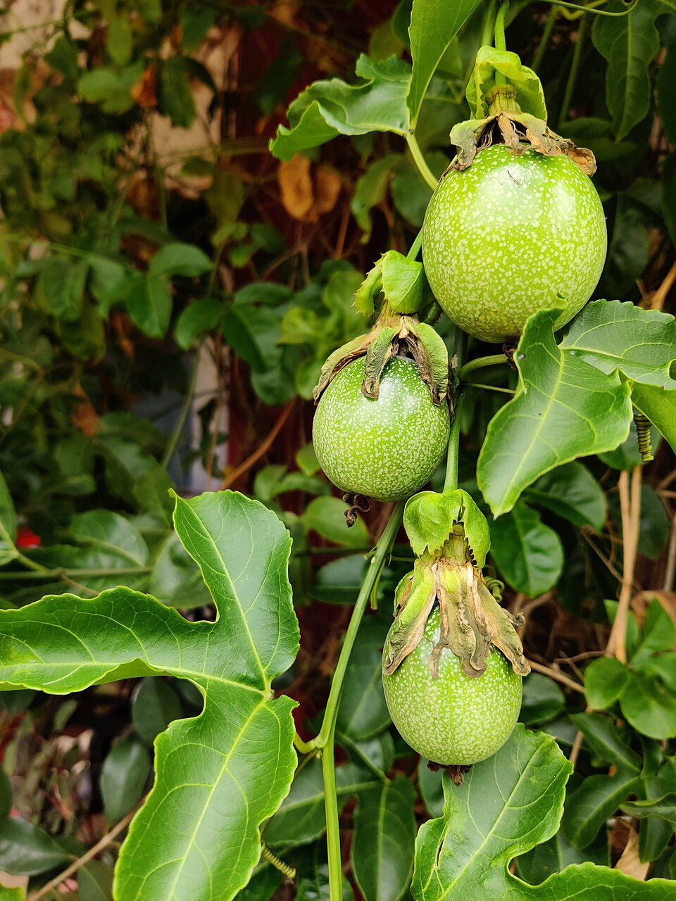

Doces · Tortas e bolos
Calda de maracujá para torta

Ingredientes
- ½ xícara (chá) de açúcar
- 1 xícara (chá) de água quente
- Polpa de 3 maracujás
Modo de preparo
- Leve o açúcar ao fogo até dourar.
- Acrescente a água quente e a polpa; ferva 2 minutos.
- Sirva quente ou fria sobre torta mousse de chocolate (ou pronta).
Observação
Dica de acompanhamento para Torta Mousse Miss Daisy (Sadia). Outras dicas do mesmo folheto: decorar com morango/framboesa/hortelã; polvilhar cacau; castanhas picadas; fio de licor.